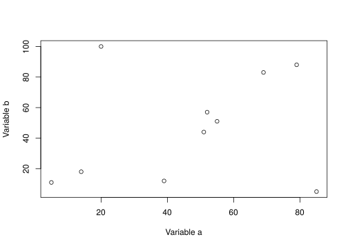
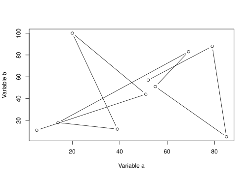
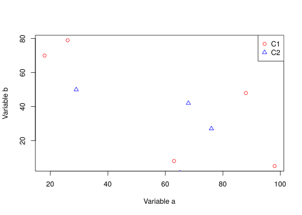
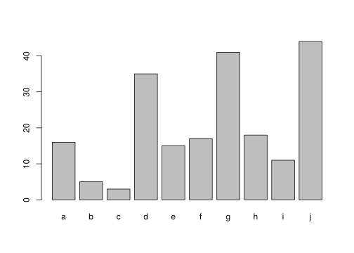
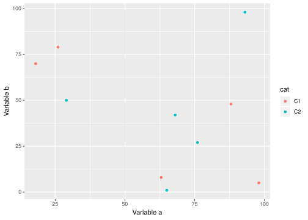
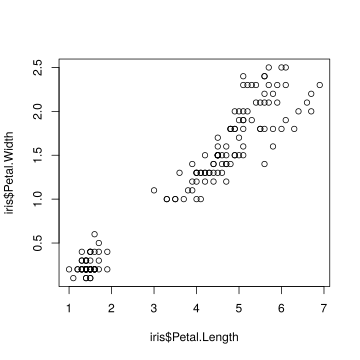

Introduction To R
Roy Francis • 08-Nov-2019

1 Topics
This tutorial aims to get you started with R. It roughly covers the following topics:
- Familiarise yourself with R & RStudio environment
- Running code, scripting and sourcing script
- Variables and operators
- Data types & datatype conversion
- Creating and running functions
- Base and grid graphics
- Input & output from R
- Brief intro to Rmarkdown and Tidyverse
2 What? Why R?
This is the definition provided by R-Project.
R is a language and environment for statistical computing and graphics.
Pros
- Data analysis
- Statistics
- High quality graphics
- Huge number of packages
- R is popular
- Reproducible research
- RStudio IDE
- FREE! Open source
Cons
- Steep learning curve
- Not elegant/consistent
- Slow
3 Getting started
R can be installed from r-project.org for Windows, Mac or Linux operating systems. It is also necessary to install Rtools from here for building packages from source when installing new packages.
RStudio is one of the best IDE (Integrated development environment) out there for any language. Download here for Windows, Mac or Linux. Rstudio provides you with an environment for organising your R projects, files and outputs. You also get debugging tools and GUI interfaces to common basic operations.

R commands are excecuted and results and returned in the Console. The Console shows a > symbol meaning that it is ready to accept commands. When it is waiting for further information, it shows a + symbol. This can happen when you have pasted in partial command or forgot to close parenthesis etc. Provide the required information, complete the command or press Esc on the keyboard to exit from the + back to the >.
Run a command in the R console.
getwd()This command prints the current working directory. When you read or write, this is the path that R looks for.
Commands written in the Console are executed and lost. R commands can be saved as a script. To create a new script, go to File > New File > R Script. This text file can be saved to the working directory named script.R. Now add some R command to the file. For example try;
date()## [1] "Fri Nov 8 10:03:09 2019"While in an R script, select the text or place the cursor on that line and click Run. Alternatively use keyboard shortcut Ctrl+Enter / Command+Enter.
date() prints the current system date. Or you could try SessionInfo() which gives you a summary of the current system setup including R version, operating system and R packages that are loaded/attached.
Then save the file as, for example script.R. All commands in the saved script.R can be run as a batch either by selecting all the commands followed by Run / Ctrl+Enter, or directly sourcing the file from the console like this:
source("script.R")
4 Variables & Operators
4.1 Basic Operators
Variables are assigned usually using the <- operator. The = operator also works in a similar way for most part.
x <- 4
x = 4
x## [1] 4The commonly used arithmetic operators are shown below returning a number.
x <- 4
y <- 2
# add
x + y
# subtract
x - y
# multiply
x * y
# divide (get quotient after division)
x / y
# modulus (get reminder after division)
x %% y
# power
x ^ y## [1] 6
## [1] 2
## [1] 8
## [1] 2
## [1] 0
## [1] 164.2 Logical Operators
Logical operators return a logical TRUE or FALSE.
# equal to?
x == y
# not equal to?
x != y
# greater than?
x > y
# less than?
x < y
# greater than or equal to?
x >= y
# less than or equal to?
x <= y## [1] FALSE
## [1] TRUE
## [1] TRUE
## [1] FALSE
## [1] TRUE
## [1] FALSEThe OR operator | and the AND operator & is useful when dealing with logical statements.
(x > y) | (y < x)
(x > y) & (y < x)## [1] TRUE
## [1] TRUE| and & are vectorised which means it can be applied to two logical vectors. Each pair is compared and a result is produced for each element. The result is a vector.
c(F,F,F,T,F,F) | c(F,F,F,F,F,F)## [1] FALSE FALSE FALSE TRUE FALSE FALSENow, there are also two variants || and &&. These operators compare left to right element-wise and stop after the first element. Consider the same example above replacing | with ||. The result is one element and not a vector.
c(F,F,F,T,F,F) || c(F,F,F,F,F,F)## [1] FALSEThe || operator may not be always desirable as it only compares the first element in both vectors to return the result.
c(F,F,F,T,F,F) | c(F,F,F,F,NA,F)
c(F,F,F,T,F,F) || c(F,F,F,F,NA,F)## [1] FALSE FALSE FALSE TRUE NA FALSE
## [1] FALSEThe longer operators also only evaluate as many terms as needed (short-circuiting). A positive side-effect of this is that if some of elements are NULL, it still returns a result.
T | NULL
T || NULL## logical(0)
## [1] TRUEIn the second case, the first part was TRUE, so it did not evaluate the second part which is a NULL. But if && was used, it will have to evaluate both sides and that would return an error.
In practice, the long operators are not commonly used. A better practice is to use any() and all() to evaluate logical vectors to a single logical.
# are any of these true?
any(c(F,F,F,T,F,F))## [1] TRUE# are all of these true?
all(c(F,F,F,T,F,F))## [1] FALSECharacters/strings can be assigned to variables in a similar manner.
z <- "this"
z1 <- "that"
paste(z,z1)## [1] "this that"The function paste() concatenates strings.
Variables names must be selected such that they do not conflict with existing variables/functions. For example, variable name c must be avoided as it is an existing function to concatenate R objects. The variable name t must be avoided as it is a function to transpose a matrix. Variable names must not start with a number.
4.3 Other Operators
Here are some other commonly used operators. : is used generate a sequence.
1:10## [1] 1 2 3 4 5 6 7 8 9 10%in% is a set operator. "a" %in% c("x","p","a","c") checks if a is a member of the set x,p,a,c.
"a" %in% c("x","p","a","c")## [1] TRUEThe reverse would also work, but the number of returned elemnts are now different.
c("x","p","a","c") %in% "a"## [1] FALSE FALSE TRUE FALSEAnd here are some operators that are not so commonly used.
:: is used to access a function explicitly from a specific package. When you normally call a function, say sum(), R searches the namespace and finds it. In case, there is a function sum() from another package, the last loaded package overrides the previous function. In cases like this or to be absolutely sure that you are using the correct function from the correct package, you can use package::function() to call a function. For example; base::sum(). ::: is used to call functions from a package that are not “exported”. This is rarely used.
%*% is used for matrix multiplication.
matrix(c(2,2,3,3),nrow=2) %*% matrix(c(4,2,5,3),nrow=2)
matrix(c(2,2,3,3),nrow=2) %*% c(6,6)## [,1] [,2]
## [1,] 14 19
## [2,] 14 19
## [,1]
## [1,] 30
## [2,] 30Challenge
Can you write the code to find and print even numbers from a vector of numbers, say 1 to 10? The output being 2 4 6 8 10. Click below to reveal the code.
x <- c(1:10)
y <- x %% 2
z <- y==0
x[z]## [1] 2 4 6 8 10More explanation?
c(1:10)creates a vectors of numbers 1 to 10. x %% 2 gets the modulus of these numbers (ie; divide by 2 and get the reminder). y==0 checks if the reminders are zero. Returns a TRUE if it’s zero or a FALSE if not. z is now a logical vector. z can be used to index x. x[z] returns values of x that are true.
This can all be written in one line as well c(1:10)[c(c(1:10) %% 2)==0].
5 Data Types
5.1 Overview
Overview of data structures in R
R data object that have a single type of data are referred to as homogenous data type. These are also called atomic types. Heterogenous objects have mixed data types.
5.2 Homogenous data
5.2.1 Basic
The mode of a variable is inspected using the function mode(). Here we can see some of the basic data objects in R.
mode(1.0)
mode(1L)
mode("hello")
mode(factor(1))
mode(T)## [1] "numeric"
## [1] "numeric"
## [1] "character"
## [1] "numeric"
## [1] "logical"Factors are explained further below. The type of a variable can be inspected using the function typeof().
typeof(1.0)
typeof(1L)
typeof("hello")
typeof(factor(1))
typeof(T)## [1] "double"
## [1] "integer"
## [1] "character"
## [1] "integer"
## [1] "logical"Other useful functions for inspecting R objects.
class(x)
str(x)
structure(x)## [1] "integer"
## int [1:10] 1 2 3 4 5 6 7 8 9 10
## [1] 1 2 3 4 5 6 7 8 9 105.2.2 Vectors
Vectors store multiple values. Multiple values, variables and vectors are concatenated together using the function c().
x <- c(2,3,4,5,6)
y <- c("a","c","d","e")
x
y## [1] 2 3 4 5 6
## [1] "a" "c" "d" "e"There are different ways to create vectors. Here are a few:
c(2,3,5,6)
2:8
seq(2,5,by=0.5)
rep(1:3,times=2)
rep(1:3,each=2)## [1] 2 3 5 6
## [1] 2 3 4 5 6 7 8
## [1] 2.0 2.5 3.0 3.5 4.0 4.5 5.0
## [1] 1 2 3 1 2 3
## [1] 1 1 2 2 3 3R uses 1-based indexing system and a specific value from a specific location in the vector is accessed using the [] operator.
x[1]
y[3]## [1] 2
## [1] "d"The c() function can be used to specify multiple positions.
x[c(1,3)]## [1] 2 4The above vector is 1-dimensional and composed of the same data type (homogenous). Such vectors are referred to as atomic vectors.
mode(x)
mode(y)
str(x)
str(y)## [1] "numeric"
## [1] "character"
## num [1:5] 2 3 4 5 6
## chr [1:4] "a" "c" "d" "e"Vectors can be added or concatenated directly. This is referred to as a vectorised operation, a crucial concept in R.
x <- c(2,3,4,5)
y <- c(9,8,7,6)
x+y
z <- c("a","an","a","a")
k <- c("boy","apple","girl","mess")
paste(z,k)## [1] 11 11 11 11
## [1] "a boy" "an apple" "a girl" "a mess"Verify if an R object is atomic (contains a single data type).
is.atomic(x)## [1] TRUEis.numeric(x)
is.character(z)## [1] TRUE
## [1] TRUEA vector of logical type is called a logical vector.
x <- c(T,F,T,T)
is.logical(x)## [1] TRUEVectorised logical operations can be performed on logical vectors.
c(F,T,F,F) | c(F,F,F,F)
c(F,T,F,F) & c(F,F,F,F)## [1] FALSE TRUE FALSE FALSE
## [1] FALSE FALSE FALSE FALSEVectors can be named if required.
x <- c("a"=2,"b"=3,"c"=8)
x## a b c
## 2 3 8Named vectors can be subsetted using the name.
x["c"]## c
## 85.2.3 Factors
Factors are vectors that store categorical data.
x <- factor(c("a","b","b","c","c"))
x
class(x)
str(x)## [1] a b b c c
## Levels: a b c
## [1] "factor"
## Factor w/ 3 levels "a","b","c": 1 2 2 3 3Factor ‘x’ has 3 categories or in R speak; 3 levels.
levels(x)## [1] "a" "b" "c"The levels are ordered automatically in alphabetical order as seen above. The order can be manually set.
factor(c("a","b","b","c","c"),levels=c("b","a","c"))## [1] a b b c c
## Levels: b a cVerify if an R object is a factor.
is.factor(x)## [1] TRUE5.2.4 Matrix
Vectors can be assembled into a matrix data structure.
x <- matrix(c(2,3,4,5,6,7))
x## [,1]
## [1,] 2
## [2,] 3
## [3,] 4
## [4,] 5
## [5,] 6
## [6,] 7A matrix is a 2D data structure with rows and columns.
# dimensions
dim(x)
# number of rows
nrow(x)
# number of columns
ncol(x)## [1] 6 1
## [1] 6
## [1] 1The number of rows and columns can be specified when building the matrix. The matrix can be filled up row-wise (byrow=T) or colum-wise (byrow=F).
x <- matrix(c(2,3,4,5,6,7),nrow=3,ncol=2,byrow=TRUE)
x## [,1] [,2]
## [1,] 2 3
## [2,] 4 5
## [3,] 6 7str(x)## num [1:3, 1:2] 2 4 6 3 5 7Verify if an R object is a matrix.
is.matrix(x)## [1] TRUEMatrix positions can be accessed using the [] operator by specifying the row and column [row,col].
x[2,2]## [1] 5A whole row or a column can be accessed by [row,] or [,col].
x[1,]
x[,2]## [1] 2 3
## [1] 3 5 7Notice that this automatically creates a vector. The matrix data type can be retained by specifying drop=FALSE.
x[1,,drop=F]
x[,2,drop=F]## [,1] [,2]
## [1,] 2 3
## [,1]
## [1,] 3
## [2,] 5
## [3,] 7Column names and row names can be added to matrices.
rownames(x) <- c("a","b","c")
colnames(x) <- c("k","p")Then the matrix can be accessed using these labels.
x["b",]
x[,"p"]## k p
## 4 5
## a b c
## 3 5 7Challenge
If I create a vector as follows x <-c(5,3,9,"6"), what is the “type” of the element in the third position? Is it a number?
x <-c(5,3,9,"6")
typeof(x[3])## [1] "character" The third position is not a number, it’s a character. In fact, all elements in this vector are characters. If there is a character in a numeric vector, all elements are converted to characters (typeof(x)).
Challenge
Create the matrix shown below and extract the third column as a vector.
## [,1] [,2] [,3]
## [1,] 2 3 4
## [2,] 5 2 7
## [3,] 6 6 6
# either this
x <- matrix(c(2,3,4,5,2,7,6,6,6),nrow=3,byrow=T)
# or this
x <- matrix(c(2,5,6,3,2,6,4,7,6),nrow=3,byrow=F)
x## [,1] [,2] [,3]
## [1,] 2 3 4
## [2,] 5 2 7
## [3,] 6 6 6# access third column
x[,3]## [1] 4 7 65.3 Heterogenous data
5.3.1 Lists
List elements can be mixed data type and is built using list() rather than c().
x <- list(c(2,3,4,5),c("a","b","c","d"),factor(c("a","a","b")),
matrix(c(3,2,3,5,6,7),ncol=2))
x## [[1]]
## [1] 2 3 4 5
##
## [[2]]
## [1] "a" "b" "c" "d"
##
## [[3]]
## [1] a a b
## Levels: a b
##
## [[4]]
## [,1] [,2]
## [1,] 3 5
## [2,] 2 6
## [3,] 3 7typeof(x)
class(x)## [1] "list"
## [1] "list"str(x)## List of 4
## $ : num [1:4] 2 3 4 5
## $ : chr [1:4] "a" "b" "c" "d"
## $ : Factor w/ 2 levels "a","b": 1 1 2
## $ : num [1:3, 1:2] 3 2 3 5 6 7Lists are recursive as there can be lists inside lists.
str(list(list(list(list()))))## List of 1
## $ :List of 1
## ..$ :List of 1
## .. ..$ : list()Verify if an R object is a list.
is.list(x)## [1] TRUEList are accessed using [] and [[]]. [] returns a list while [[]] returns the object inside the list.
x[1]## [[1]]
## [1] 2 3 4 5x[1:2]
class(x[1:2])## [[1]]
## [1] 2 3 4 5
##
## [[2]]
## [1] "a" "b" "c" "d"
##
## [1] "list"x[[4]]
class(x[[4]])## [,1] [,2]
## [1,] 3 5
## [2,] 2 6
## [3,] 3 7
## [1] "matrix"List items can also be named. Let’s add a list into our list.
x$newlist <- list(c(500,600,700))
x## [[1]]
## [1] 2 3 4 5
##
## [[2]]
## [1] "a" "b" "c" "d"
##
## [[3]]
## [1] a a b
## Levels: a b
##
## [[4]]
## [,1] [,2]
## [1,] 3 5
## [2,] 2 6
## [3,] 3 7
##
## $newlist
## $newlist[[1]]
## [1] 500 600 700Lists can be accessed by the name.
x$newlist## [[1]]
## [1] 500 600 700Use unlist() to remove the list structure.
unlist(x$newlist)## [1] 500 600 7005.3.2 data.frame
data.frames are the most common way to store data in R. dataframes are basically lists of equal-length vectors. Like matrices, dataframe 2D with rows and columns. data.frames are created using the function data.frame(). The most important difference between a matrix and a data.frame is that matrices are atomic (contains data of one type) while data.frames can contain a mix of numeric columns, characters, factors, logicals etc.
dfr <- data.frame(x = 1:3, y = c("a", "b", "c"))
print(dfr)Notice that we have named the columns as ‘x’ and ‘y’.
str(dfr)## 'data.frame': 3 obs. of 2 variables:
## $ x: int 1 2 3
## $ y: Factor w/ 3 levels "a","b","c": 1 2 3Notice that column ‘y’ has been automatically converted to a factor. This is the root of a lot of issues for new R users. It is best to avoid the automatic conversion by setting stringsAsFactors=FALSE.
dfr <- data.frame(x = 1:3, y = c("a", "b", "c"), stringsAsFactors = F)
str(dfr)## 'data.frame': 3 obs. of 2 variables:
## $ x: int 1 2 3
## $ y: chr "a" "b" "c"Verify if an R object is a ‘data.frame’.
is.data.frame(dfr)## [1] TRUEAccessing positions in a data.frame is similar to matrices. In addition, the $ operator is also commonly used to access a column.
dfr$x
dfr$y## [1] 1 2 3
## [1] "a" "b" "c"Subset a data.frame() conditionally.
print(subset(dfr,dfr$y=="a"))Get column names and row names of a data.frame
colnames(dfr)
rownames(dfr)## [1] "x" "y"
## [1] "1" "2" "3"Ordering a dataframe by one column in decreasing order.
print(dfr[order(dfr$y,decreasing=T),])5.4 Type conversion
Several functions are available to convert R objects from one type to another.
x <- c(1,2,3)
str(x)## num [1:3] 1 2 3y <- as.character(x)
str(y)## chr [1:3] "1" "2" "3"The numeric vector has been converted to a character vector. Similarly, character can be coerced (if possible) into numbers.
x <- c("1","2","hello")
str(x)## chr [1:3] "1" "2" "hello"str(as.numeric(x))## num [1:3] 1 2 NANotice that characters that cannot be converted to a valid number is converted to NA along with a warning message.
Challenge
Here is a data.frame inside a list which is inside a list. How do you extract the Species column as a vector?
## List of 1
## $ :List of 1
## ..$ :'data.frame': 6 obs. of 5 variables:
## .. ..$ Sepal.Length: num [1:6] 5.1 4.9 4.7 4.6 5 5.4
## .. ..$ Sepal.Width : num [1:6] 3.5 3 3.2 3.1 3.6 3.9
## .. ..$ Petal.Length: num [1:6] 1.4 1.4 1.3 1.5 1.4 1.7
## .. ..$ Petal.Width : num [1:6] 0.2 0.2 0.2 0.2 0.2 0.4
## .. ..$ Species : Factor w/ 3 levels "setosa","versicolor",..: 1 1 1 1 1 1
x <- list(list(head(iris)))
# either this
x[[1]][[1]]$Species
# or this
x[[1]][[1]][,5]## [1] setosa setosa setosa setosa setosa setosa
## Levels: setosa versicolor virginica
## [1] setosa setosa setosa setosa setosa setosa
## Levels: setosa versicolor virginica[] access a list but still returns a list. [[]] returns the object inside a list.
6 Functions
Functions are chunks of code packaged into reusable units. We have used many functions in the previous sections such as c(), str(), is.list(), typeof() etc.
6.1 Built-In
Functions that come with the base R installation are referred to as built-in functions or base functions. R has loads of built-in functions for various applications such as data analysis, programming, math, plotting etc. Additional functions can be made available by installing external packages.
Below are some functions that can be applied to numeric data:
# generate 10 random numbers between 1 and 200
x <- sample(x=1:200,10)
# length
length(x)
# sum
sum(x)
# mean
mean(x)
# median
median(x)
# min
min(x)
# log
log(x)
# exponent
exp(x)
# square-root
sqrt(x)
# round
round(x)
# sort
sort(x)## [1] 10
## [1] 916
## [1] 91.6
## [1] 75.5
## [1] 2
## [1] 4.7273878 0.6931472 4.1743873 4.0604430 4.8978398 5.1929569 3.9120230
## [8] 3.9512437 5.1704840 4.4543473
## [1] 1.189259e+49 7.389056e+00 1.694889e+28 1.545539e+25 1.568414e+58
## [6] 1.489384e+78 5.184706e+21 3.831008e+22 2.727902e+76 2.235247e+37
## [1] 10.630146 1.414214 8.062258 7.615773 11.575837 13.416408 7.071068
## [8] 7.211103 13.266499 9.273618
## [1] 113 2 65 58 134 180 50 52 176 86
## [1] 2 50 52 58 65 86 113 134 176 180Some useful string functions.
a <- "sunny"
b <- "day"
# join
paste(a, b)
# find a pattern
grep("sun", a)
# number of characters
nchar("sunny")
# to uppercase
toupper("sunny")
# to lowercase
tolower("SUNNY")
# replace pattern
sub("sun", "fun", "sunny")
# substring
substr("sunny", start=1, stop=3)## [1] "sunny day"
## [1] 1
## [1] 5
## [1] "SUNNY"
## [1] "sunny"
## [1] "funny"
## [1] "sun"Some general functions
print("hello")
print("world")
cat("hello")
cat(" world")
cat("\nhello\nworld")## [1] "hello"
## [1] "world"
## hello world
## hello
## world6.2 Custom
If you see yourself copy-pasting a chunk of R code many times, then it is probably a good idea to create a function out of it.
Let’s say you have two vectors that you would like to perform a series of operations on and then output a result.
a <- 1:6
b <- 8:10
d <- a*b
e <- log(d)
f <- sqrt(e)
f## [1] 1.442027 1.700109 1.844234 1.861649 1.951067 2.023449You can modify this code block into a function as follows:
my_function <- function(a, b){
d <- a*b
e <- log(d)
f <- sqrt(e)
return(f)
}Once defined, you can use this wherever needed.
my_function(a=2:4, b=6:8)## [1] 1.576359 1.744856 1.861649a and b are called arguments or parameters to the function. If they are explicity written, then the position defines which parameter they are.
# this
my_function(a=2:4, b=6:8)
# is the same as this
my_function(b=2:4, a=6:8)
# and the same as this
my_function(2:4, 6:8)## [1] 1.576359 1.744856 1.861649
## [1] 1.576359 1.744856 1.861649
## [1] 1.576359 1.744856 1.861649In this case my_function(2:4,6:8), argument a is 2:4 and argument b is 6:8. In this case my_function(6:8,2:4), argument a is 6:8 and argument b is 2:4.
Variables defined within a function are only available within that function and not available outside that function unless returned.
my_new_function <- function(a) {
varz <- a + 2
return(varz)
}
my_new_function(5)
print(varz)## Error in print(varz): object 'varz' not found## [1] 7In the above function, variable varz created inside the function is not available outside of that function.
But the reverse is possible.
my_new_function <- function() {
varz <- foo + 2
return(varz)
}
foo <- 55
my_new_function()## [1] 57In the example above, variable foo used inside the function is not supplied to the function through an argument, yet it still manages to find it. When a function doesn’t find a variable inside a function, it searches outside the function.
Challenge
R lacks a function to compute coefficient of variation (COV). Create a function to compute the COV. And use the function to compute the COV of these set of values: c(4,7,2,3,5,4,3). The formula for COV is cov=sd/mean. Remember to NOT use cov as the function name because it already exists (?cov). It stands for covariance. So, use another function name.
covfefe <- function(x) sd(x)/mean(x)
covfefe(c(4,7,2,3,5,4,3))## [1] 0.40824837 Control Structures
Conditional statements are written using if().
a <- 2
b <- 5
if(a < b) print(paste(a,"is smaller than",b))## [1] "2 is smaller than 5"else is used to add an alternative output.
a <- 2
b <- 5
if(a < b) {
print(paste(a,"is smaller than",b))
}else{
print(paste(b,"is smaller than",a))
}
a <- 60
b <- 10
if(a < b) {
print(paste(a,"is smaller than",b))
}else{
print(paste(b,"is smaller than",a))
}## [1] "2 is smaller than 5"
## [1] "10 is smaller than 60"if else statements can be chained together:
grade <- "B"
if(grade == "A"){
print("Grade is Excellent!")
}else if(grade == "B"){
print("Grade is Good.")
} else if (grade == "C") {
print("Grade is Alright.")
}## [1] "Grade is Good."This is not to be confused with a function called ifelse(). This is also used for conditional selection and takes the form ifelse(test, return-if-yes, return-if-no), and this is vectorised. So, for example, here are some ages of persons. Classify them as adults or juveniles.
x <- c(6,23,12,10,56,44)
ifelse(x>18,"Adult","Juvenile")## [1] "Juvenile" "Adult" "Juvenile" "Juvenile" "Adult" "Adult"The for() loop is useful to run commands repeatedly over a known number of iterations.
for (i in 1:5){
print(i)
}## [1] 1
## [1] 2
## [1] 3
## [1] 4
## [1] 5The while() loop is useful to run commands repeatedly for an unknown number of iterations until a condition is satisfied.
i <- 1
while(i < 5){
print(i)
i <- i+1
}## [1] 1
## [1] 2
## [1] 3
## [1] 4Challenge
Below is a Floyd’s triangle. This is right-angled triangle where the number of elements in each row is the same as the row number. And the numbers increase consecutively top to bottom. For a given number of rows, can you write the code using control structures to generate this result?
The function cat() can be used to print text without a new line (ie; in the same line). cat("\n") adds a new line.
1
2 3
4 5 6
7 8 9 10
11 12 13 14 15
rows <- 5
n <- 1
for(i in 1:rows) {
for(j in 1:i) {
cat(paste0(n," "))
n <- n+1
}
cat("\n")
}## 1
## 2 3
## 4 5 6
## 7 8 9 10
## 11 12 13 14 15This is one way to do it. This is called a nested for-loop. The variable n carries the actual value to be printed. It is incremented everytime it is printed (n <- n+1). Variable i keeps track of rows. Variable j keeps track of elements on each row. After all elements on a row has been printed, control exits the j loop and cat("\n") creates a new line.
8 R packages
R packages extend the functionality of base R. R packages are stored in repositories of which the most commonly used is called CRAN (The Comprehensive R Archive Network).
Packages are installed using the function install.packages(). Let’s install the graphics and plotting package ggplot2 which will be useful in later sections.
install.packages("ggplot2",dependencies=TRUE)Packages can also be installed from a local zipped file by providing a local path ans setting type="source".
install.packages("./dir/package.zip",type="source")Inside RStudio, installing packages is much easier. Go to the Packages tab and click Install. In the window that opens up, you can find your package by typing into the Packages field and clicking Install.

Packages on GitHub can be installed using the function install_github() from package devtools.
9 Graphics
9.1 Base graphics
R is an excellent tool for creating graphs and plots. The graphic capabilities and functions provided by the base R installation is called the base R graphics. Numerous packages exist to extend the functionality of base graphics.
We can try out plotting a few of the common plot types. Let’s start with a scatterplot. First we create a data.frame as this is the most commonly used data object.
dfr <- data.frame(a=sample(1:100,10),b=sample(1:100,10))Now we have a dataframe with two continuous variables that can be plotted against each other.
plot(dfr$a,dfr$b)
This is probably the simplest and most basic plots. We can modify the x and y axis labels.
plot(dfr$a,dfr$b,xlab="Variable a",ylab="Variable b")
We can change the point to a line.
plot(dfr$a,dfr$b,xlab="Variable a",ylab="Variable b",type="b")
Let’s add a categorical column to our dataframe.
dfr$cat <- rep(c("C1","C2"),each=5)And then colour the points by category.
# subset data
dfr_c1 <- subset(dfr,dfr$cat == "C1")
dfr_c2 <- subset(dfr,dfr$cat == "C2")
plot(dfr_c1$a,dfr_c1$b,xlab="Variable a",ylab="Variable b",col="red",pch=1)
points(dfr_c2$a,dfr_c2$b,col="blue",pch=2)
legend(x="topright",legend=c("C1","C2"),
col=c("red","blue"),pch=c(1,2))
Let’s create a barplot.
ldr <- data.frame(a=letters[1:10],b=sample(1:50,10))
barplot(ldr$b,names.arg=ldr$a)
9.2 Grid graphics
Grid graphics have a completely different underlying framework compared to base graphics. Generally, base graphics and grid graphics cannot be plotted together. The most popular grid-graphics based plotting library is ggplot2.
Let’s create the same plot are before using ggplot2. Make sure you have the package installed.
library(ggplot2)
ggplot(dfr,aes(x=a,y=b,colour=cat))+
geom_point()+
labs(x="Variable a",y="Variable b")
It is generally easier and more consistent to create plots using the ggplot2 package compared to the base graphics.
Let’s create a barplot as well.
ggplot(ldr,aes(x=a,y=b))+
geom_bar(stat="identity")
10 Input/Output
Input and output of data and images is an important aspect with data analysis.
10.1 Text
Data can come in a variety of formats which needs to be read into R and converted to an R data type.
Text files are the most commonly used input. Text files can be read in using the function read.table. We have a sample file to use: iris.txt.
dfr <- read.table("iris.txt",header=TRUE,stringsAsFactors=F)This reads in a tab-delimited text file with a header. The argument sep='\t' is set by default to specify that the delimiter is a tab. stringsAsFactors=F setting ensures that character columns are not automatically converted to factors.
It’s always a good idea to check the data after import.
head(dfr)str(dfr)## 'data.frame': 150 obs. of 5 variables:
## $ Sepal.Length: num 5.1 4.9 4.7 4.6 5 5.4 4.6 5 4.4 4.9 ...
## $ Sepal.Width : num 3.5 3 3.2 3.1 3.6 3.9 3.4 3.4 2.9 3.1 ...
## $ Petal.Length: num 1.4 1.4 1.3 1.5 1.4 1.7 1.4 1.5 1.4 1.5 ...
## $ Petal.Width : num 0.2 0.2 0.2 0.2 0.2 0.4 0.3 0.2 0.2 0.1 ...
## $ Species : chr "setosa" "setosa" "setosa" "setosa" ...Read the table by setting stringsAsFactors=F and then by setting stringsAsFactors=T. Check what is the difference using str(dfr). Check ?read.table for other wrapper functions to read in text files.
Let’s filter this data.frame and create a new dataset.
dfr1 <- dfr[dfr$Species == "setosa",]And we can write this as a text file.
write.table(dfr1,"iris-setosa.txt",sep="\t",row.names=F,quote=F)sep="\t" sets the delimiter to tab. row.names=F denotes that rownames should not be written. quote=F specifies that doubles must not be placed around strings.
10.2 Images
Let’s take a look at saving figures.
10.2.1 Base
The general idea for saving plots is open a graphics device, create the plot and then close the device. We will use png here. Check out ?png for the arguments and other devices.
dfr <- data.frame(a=sample(1:100,10),b=sample(1:100,10))
png(filename="plot-base.png")
plot(dfr$a,dfr$b)
dev.off()10.2.2 ggplot2
The same idea can be applied to ggplot2, but in a slightly different way. First save the file to a variable, and then export the plot.
p <- ggplot(dfr,aes(a,b)) + geom_point()
png(filename="plot-ggplot-1.png")
print(p)
dev.off()ggplot2 also has another easier helper function to export images.
ggsave(filename="plot-ggplot-2.png",plot=p)10.3 R objects
Objects in R can also be as native R objects. This has pros and cons. The files are compressed, small in size and quickly read into R. It cannot be read into any other program.
For example, let’s create a data.frame and save it using the saveRDS() function. The file extension used is usually .Rds.
dfr <- data.frame(a=sample(1:100,10),b=sample(1:100,10))
saveRDS(dfr,"data.Rds")This file can be read back into R and assigned to a new variable if needed.
dfr <- readRDS("data.Rds")A different way to save is using the save() function. This can be used to save one or multiple objects. The file extension used is usually .Rda or .Rdata.
dfr1 <- data.frame(a=sample(1:100,10),b=sample(1:100,10))
dfr2 <- data.frame(a=sample(1:100,20),b=sample(1:100,20))
save(dfr1,dfr2,"data.Rdata")This file can be read back into R using load(). In this case, the variable names remain the same and cannot be changed on the fly.
load("data.Rdata")The last approach is save all objects in the environment. This is referred to as saving the workspace.
save.image(file="workspace.Rdata")
load("workspace.Rdata")11 Rmarkdown
When carrying out data analyses in R, it is desirable to add textual descriptions and/or explanations for the various steps carried out. A convenient way to do this in the RStudio ecosystem is using Rmarkdown in R notebooks.
Markdown (md) is a human readable and simplified notation for formatting text. Markdown can be mixed with regular text. The text can then be run through a compiler that understands markdown to apply the formatting. The end product can be an HTML document, a PDF document etc. Rmarkdown (Rmd) combines text, markdown and R code. The R code embedded in R chunks are executed/evaluated and the results are included in the output document.
An Rmd is converted to a md using the command knit() from package knitr and this is usually called knitting. The markdown file can then be converted to any other endpoint formats such as HTML, PDF etc using the command render() from package rmarkdown(). This step is usually called rendering. The knitting and rendering can also be done interactively by clicking the Knit button in RStudio. This whole process is visualised in the figure below.

A new Rmd file can be opened in RStudio by going to File > New File > R Markdown. An Rmarkdown file ends in the .Rmd or Rmarkdown extension in contrast to the R script file which ends in a .R extension.
An Rmd file starts with a block of code at the top that looks like this.
---
title: "My analyses"
subtitle: "A subtitle goes here"
author: "Me, myself and I"
output:
html_document:
toc: true
number_sections: true
theme: united
highlight: textmate
---This is called the YAML matter. These are name-value pairs described in the YAML format. Many useful arguments can be specified here.
The title, subtitle, author and date is displayed at the top of the rendered document. Argument output is used to specify output document type and related arguments. html_document is commonly used to specify the standard HTML output. pdf_document is used to specify the standard PDF output. This then takes further arguments. Sub arguments differ depending on the output document type.
Above are some of the arguments that can be supplied to the HTML document type. theme is used to specify the document style such as the font and layout. highlight is used to specify the code highlighting style. toc specifies that a table of contents must be included. number_sections specifies if the headings/sections must be automatically numbered. Use ?rmarkdown::html_document for description of all the various options.
11.1 Text
The above level 2 heading was created by specifying ## Text. Other headings can be specified similarily.
## Level 2 heading
### Level 3 heading
#### Level 4 heading
##### Level 5 heading
###### Level 6 heading Bullet points are usually specified using * or + or -.
+ Point one
+ Point two- Point one
- Point two
Here are a few more common text formattings.
*This is italic text*or_This is italic text_renders as This is italic text
**This is italic text**or__This is italic text__renders as This is bold text
- Subscript
H~2~Orenders as H2O - Superscript
2^10^renders as 210
Block quotes can be specified using >.
> This is a block quote. This
> paragraph has two lines.This is a block quote. This paragraph has two lines.
Lists can also be created inside block quotes.
> 1. This is a list inside a block quote.
> 2. Second item.
- This is a list inside a block quote.
- Second item.
Links can be created using [this](https://rmarkdown.rstudio.com/) like this.
11.2 Images
Images can be displayed from a relative local location using . When rendered, this looks like:

This is a caption
By default, the image is displayed at full scale or until it fills the display width. The image dimension can be adjusted {width=20%}. This is not a universal markdown formatting and may not always work.
This is a caption
For finer control, raw HTML can be used. For example;
<img src="images/uu.jpg" width="150px">
Images can also be displayed using R code. Chunks option out.width in RMarkdown can be used to control image display size.
This image is displayed at a size of 150 pixels.
```{r,out.width=150}
knitr::include_graphics('images/uu.jpg')
```
11.3 Code
Text can be formatted as code. Code is displayed using monospaced font. Code formatting that stands by itself as a paragraph is called block code. Block codes are specified using three backticks ``` followed by code and then three more backticks.
This text below
```
This is generic block code.
```renders like this
This is generic block code.Code formatting can also be included in the middle of a sentence. This is called inline code formatting. Using this `This is an inline formatted code.` renders like this: This is an inline formatted code.
The above codes are not actually executed. They are just text formatted in a different font. Code can be executed by specifying the language along with the backticks. Block code formatted as such:
```{r}
str(iris)
```renders like this:
str(iris)## 'data.frame': 150 obs. of 5 variables:
## $ Sepal.Length: num 5.1 4.9 4.7 4.6 5 5.4 4.6 5 4.4 4.9 ...
## $ Sepal.Width : num 3.5 3 3.2 3.1 3.6 3.9 3.4 3.4 2.9 3.1 ...
## $ Petal.Length: num 1.4 1.4 1.3 1.5 1.4 1.7 1.4 1.5 1.4 1.5 ...
## $ Petal.Width : num 0.2 0.2 0.2 0.2 0.2 0.4 0.3 0.2 0.2 0.1 ...
## $ Species : Factor w/ 3 levels "setosa","versicolor",..: 1 1 1 1 1 1 1 1 1 1 ...Code blocks are called chunks. The chunk is executed when this document is rendered. In the above example, the rendered output has two chunks; input and output chunks. The rendered code output is also given code highlighting based on the language. For example;
This code chunk
```{r,eval=FALSE}
str(iris)
```when rendered (not evaluated) looks like
str(iris)This rendered and evaluated chunk below
```{r,eval=TRUE}
str(iris)
```looks like this
str(iris)## 'data.frame': 150 obs. of 5 variables:
## $ Sepal.Length: num 5.1 4.9 4.7 4.6 5 5.4 4.6 5 4.4 4.9 ...
## $ Sepal.Width : num 3.5 3 3.2 3.1 3.6 3.9 3.4 3.4 2.9 3.1 ...
## $ Petal.Length: num 1.4 1.4 1.3 1.5 1.4 1.7 1.4 1.5 1.4 1.5 ...
## $ Petal.Width : num 0.2 0.2 0.2 0.2 0.2 0.4 0.3 0.2 0.2 0.1 ...
## $ Species : Factor w/ 3 levels "setosa","versicolor",..: 1 1 1 1 1 1 1 1 1 1 ...The chunk has several options which can be used to control chunk properties.
Using `{r,eval=FALSE}` prevents that chunk from being executed. `{r,eval=TRUE}` which is the default, executes the chunk. Using `{r,echo=FALSE}` prevents the code from that chunk from being displayed. Using `{r,results="hide"}` hides the output from that chunk. There are many other chunk arguments. Here are some of them:
| Option | Default | Description |
|---|---|---|
| eval | TRUE | Evaluates the code in this chunk |
| echo | TRUE | Display the code |
| results | “markup” | “markup”,“asis”,“hold” or “hide” |
| warning | TRUE | Display warnings from code execution |
| error | FALSE | Display error from code execution |
| message | TRUE | Display messages from this chunk |
| tidy | FALSE | Reformat code in to be tidy |
| cache | FALSE | Cache results for future renders |
| comment | “##” | Character to prefix result output |
Chunk options are specified like this:
```{r,eval=FALSE,echo=FALSE,fig.height=6,fig.width=7}
```11.4 Plots
R Plots can be plotted like below:
```{r,fig.height=5,fig.width=5}
plot(x=iris$Petal.Length,y=iris$Petal.Width)
```
Below are some of chunk options relating to plots.
| Option | Default | Description |
|---|---|---|
| fig.height | 7 | Figure height in inches |
| fig.width | 7 | Figure width in inches |
| fig.cap | "" | Figure caption |
| fig.align | “center” | Figure alignment |
| dev | “png” | Change png, jpg, pdf, svg etc |
11.5 Export
The Rmarkdown notebook can be exported into various format. The most common formats are HTML and PDF.
Rmd files can be exported to HTML using rmarkdown::render("document.Rmd"). Alternatively, this can be done interactively by clicking the Knit button in RStudio.

When converting to PDF, markdown is converted to TeX format. And the conversion to PDF needs a tool that understands TeX format and converts to PDF. This can be softwares like ‘MacTeX’, ‘MikTeX’ etc. which needs to be installed on the system beforehand. For PDF output, YAML matter must be changed to output::pdf_document. Alternatively rmarkdown::render("document.Rmd",output_format=pdf_document()) also works.
12 Tidyverse
Tidyverse is a collection of R packages that share underlying design and grammar to solving data science challenges using R.

These are some of the features.
- Modern, consistent and optimised functions
- Additional features compared to base R
- New code structure using new operators (Eg: pipe
%>%) - Tidy data & tidy evaluation
Tidyverse consists of ~26 packages, all of which can be easily installed by running install.packages("tidyverse"). And running library(tidyverse) loads the top 7 most commonly used packages: ggplot2, dplyr, tidyr, readr, purrr, tibble, stringr and forcats.
We can start with some functions from dplyr which helps us to perform some common data operations. Below is a comparison of base R commands and dplyr commands.
Here is the base R code.
# selecting columns from a data.frame
iris[,c("Petal.Length","Sepal.Length","Species")]
# add column to a data.frame
iris$new <- iris$Petal.Length/iris$Sepal.Length
# filter rows by criteria
iris[iris$Species=="setosa",]
# ordering a data.frame
iris[order(iris$Sepal.Length),]Here is the corresponding code using dplyr.
# selecting columns from a data.frame
select(iris,Petal.Length,Sepal.Length,Species)
# add column to a data.frame
mutate(iris,new=Petal.Length/Sepal.Length)
# filter rows by criteria
filter(iris,Species=="setosa")
# ordering a data.frame
arrange(iris,Sepal.Length)Tidyverse functions are designed to be chained together using the pipe (%>%) operator to accomplish tasks. Therefore, the above code can be modified to below
iris %>%
select(Petal.Length,Sepal.Length,Species) %>%
mutate(new=Petal.Length/Sepal.Length) %>%
filter(Species=="setosa") %>%
arrange(Sepal.Length)13 Help

- Use
?functionto get function documentation - Use
??nameto search for a function - Use
args(function)to get the arguments to a function - Go to the package CRAN page/webpage for vignettes
- R bloggers: Great blog to follow to keep updated with the latest in the R world as well as tutorials.
- Stackoverflow: Online community to find solutions to your problems.
14 Learning R

There are lots of resources for getting help in R.
14.1 Reference
- R Cookbook: General purpose reference.
- Quick R: General purpose reference.
- Awesome R: Curated list of useful R packages.
- RStudio cheatsheets: Useful cheatsheets.
- Advanced R by Hadley Wickham (Medium to advanced content)
14.2 Tutorials
- Introduction to R: Tutorials by Datacamp.
- R programming tutorial: Youtube video tutorial by Derek Banas.
- R for data science Data science tutorial by Hadley wickham.
- Data carpentry Data carpentry R workshop
14.3 Links
- Tutorialspoint: Good list of resources.
Built on 08-Nov-2019. Graphics from 
2019 • Roy Francis • SciLifeLab • NBIS